Le montage, 48 secondes
Ce que c'est : les douze plans montés à leur durée exacte, chacun avec le mouvement de caméra prévu, et la voix off posée aux secondes du storyboard. C'est l'épreuve que le récit tient en 48 secondes — ni plus, ni moins.
Ce que ce n'est pas : le film. Rien ne bouge à l'intérieur des images ; seul le cadre se déplace. Il n'y a pas de musique, et les effets décrits sur les fiches — le papier aspiré, la carte qui se déplie, la bulle qui se dissout — restent à animer. Le plan 11 y passe encore en esquisse.
Voix : synthèse Azure,
fr-CA-SylvieNeural. Montage : images fixes et
zoompan, 1920 × 1080, 25 images/s.
Le problème
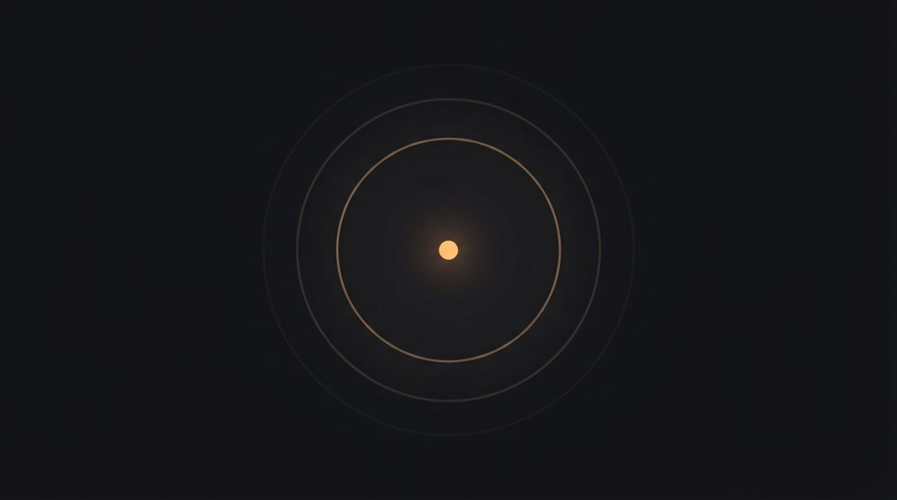
010:00 – 0:03
Le point qui écoute
Noir. Un seul point lumineux au centre — le point du « i ». Il pulse, deux anneaux s'ouvrent autour de lui comme un micro qui capte.
Voix off—
SonSilence, puis une inspiration.
C'est le seul plan noir du film. Tout le reste est crème.
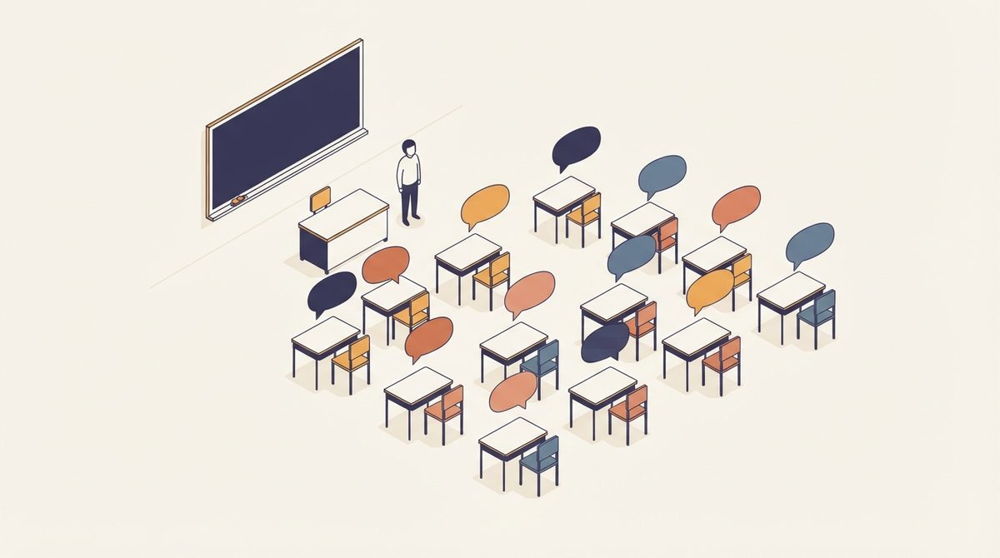
020:03 – 0:07
Quinze pupitres
Classe en vue isométrique. L'enseignante seule devant quinze pupitres. Au-dessus de chacun, une bulle vide d'une couleur différente.
Voix off« Quinze élèves. Quinze langues. Un seul enseignant. »
SonPiano feutré, une note par phrase.
Les bulles restent vides : personne ne parle encore.
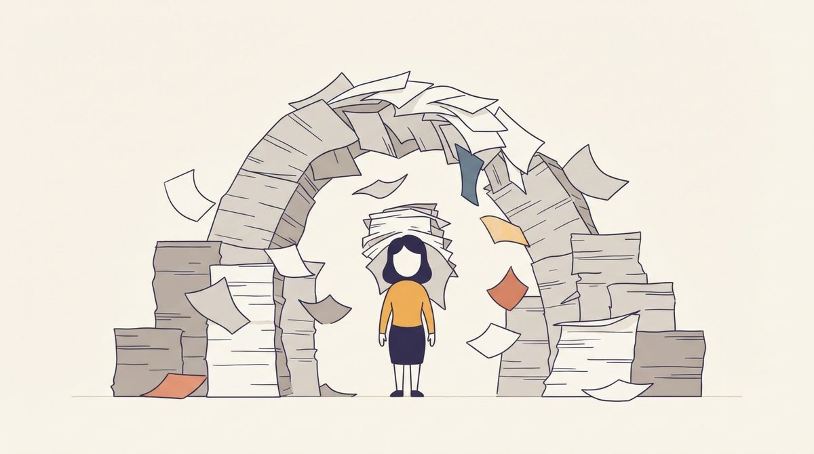
030:07 – 0:11
La pile de photocopies
Les piles montent de partout et se referment en arche au-dessus de l'enseignante, qui disparaît presque sous le papier.
Voix off« Et une préparation qui ne finit jamais. »
SonBruit de papier qui s'accumule, de plus en plus dense.
Reprise du plan : il fallait qu'on la voie être ensevelie, pas seulement la pile.
Le renversement
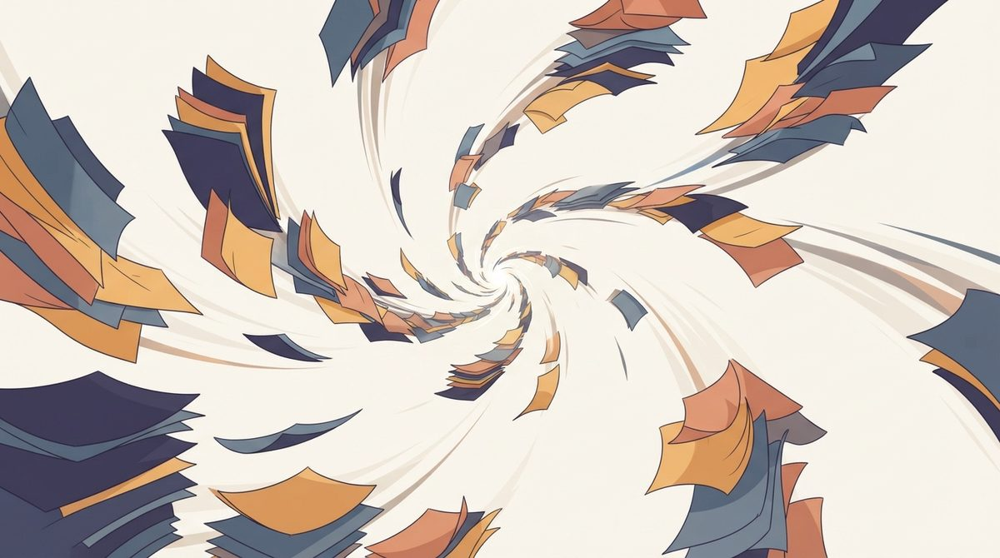
040:11 – 0:13
L'aspiration
Tout le papier s'étire, spirale et se fait avaler par un point unique. Traînées de vitesse.
Voix off—
SonSouffle d'aspiration — puis silence net. La musique se coupe.
Le pivot du film. Deux secondes, pas plus.
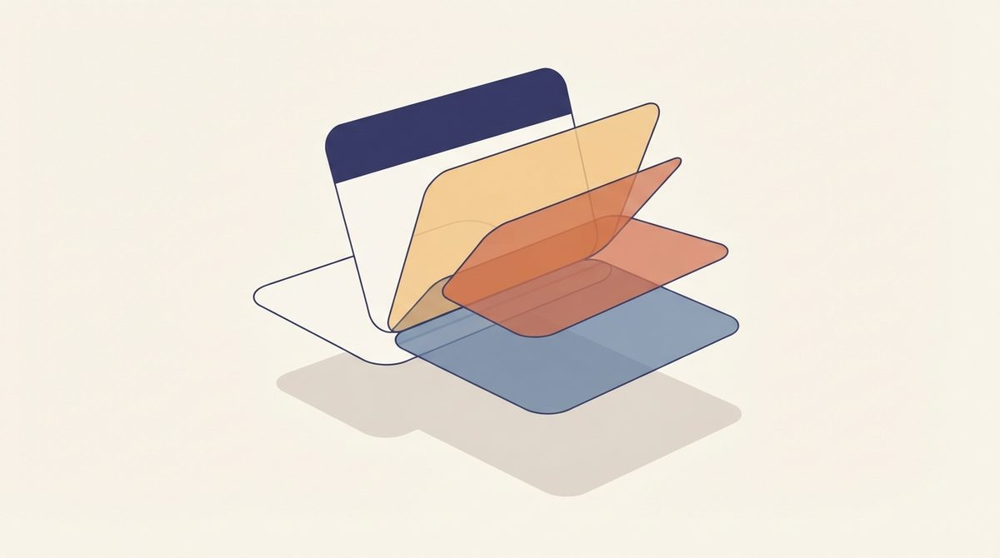
050:13 – 0:16
La carte qui se déplie
Une carte de module s'ouvre en éventail : en-tête coloré, puis les quatre sections — Je découvre, Défi, Je me lance, Je retiens des mots.
Voix off—
SonLe piano redémarre, une note par section qui se déplie.
Les quatre panneaux sortent dans l'ordre exact des sections d'un module.
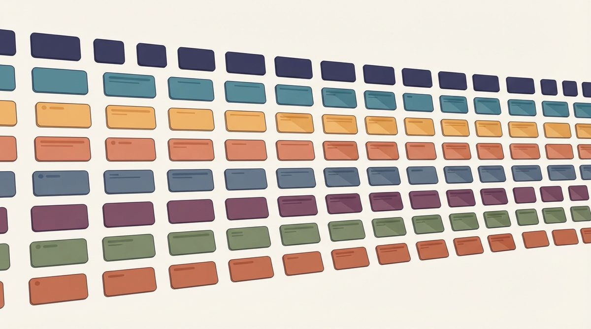
060:16 – 0:20
La grille des modules
La caméra recule. Des dizaines de cartes se rangent en huit bandes horizontales, une couleur par niveau, jusqu'à un horizon flou.
Voix off« francis. Le cours de francisation, déjà écrit. »
SonLa nappe s'installe sous le piano.
Huit bandes = huit niveaux. Aucune n'est verte : la couleur d'un module est celle de son niveau.
Les trois preuves
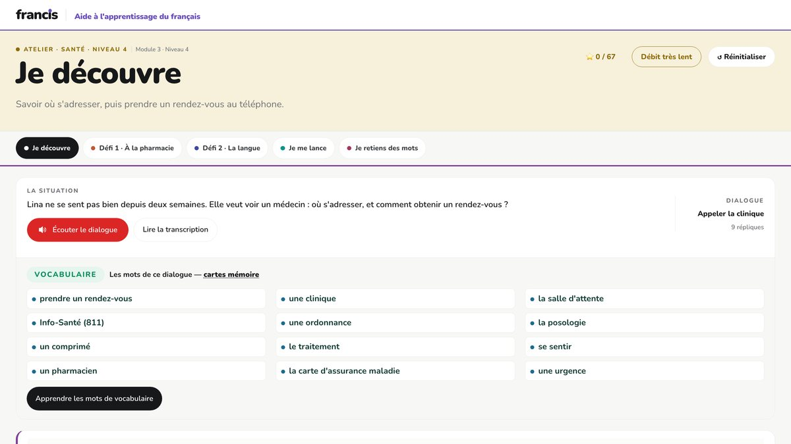
070:20 – 0:26
L'élève écoute
L'écran réel du module Santé, niveau 4. En haut à droite, le bouton de débit est au troisième cran : « Débit très lent ». Sous le dialogue, le lecteur et la liste de vocabulaire.
Voix off« L'élève écoute à sa vitesse. »
SonLa même réplique, jouée deux fois : vite, puis lentement.
Capture réelle. L'animation n'ajoute que le curseur qui va cliquer le bouton de débit.
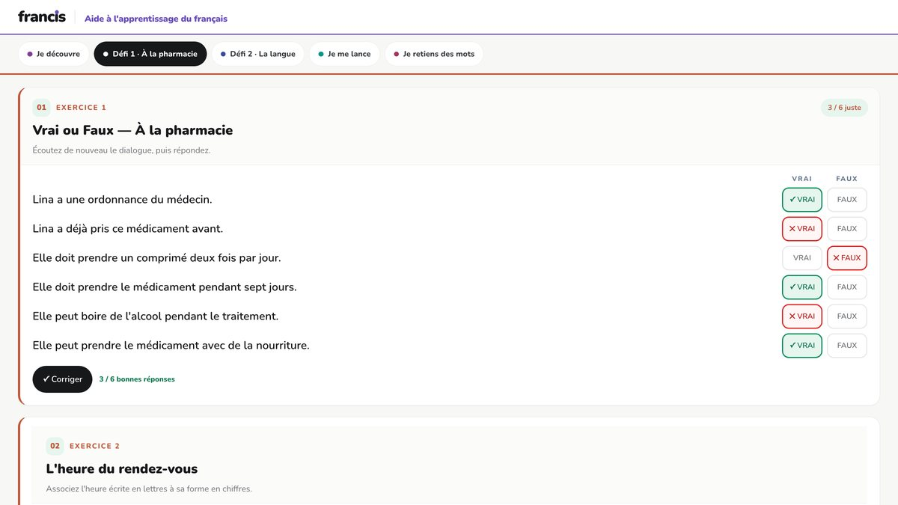
080:20 – 0:26
L'erreur corrigée
Un vrai ou faux corrigé : six énoncés, des crochets verts et des croix rouges, et le compte « 3 / 6 bonnes réponses » sous le bouton Corriger.
Voix off« Se trompe. Recommence. »
SonDeux clics secs.
Capture réelle, erreurs semées exprès. Le texte est lisible ici : c'est le seul plan où on assume de montrer du français.
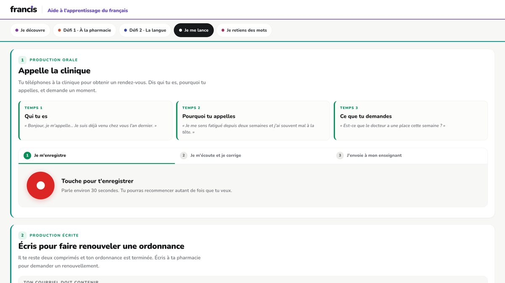
090:26 – 0:32
L'élève parle
L'écran « Je me lance ». Trois cartes de plan — qui tu es, pourquoi tu appelles, ce que tu demandes — puis les trois étapes et le gros bouton rouge « Touche pour t'enregistrer ».
Voix off« Il s'enregistre. Il reçoit une correction. »
SonL'onde qui monte, une respiration.
Capture réelle. L'animation fait pulser le bouton d'enregistrement et monter l'onde.
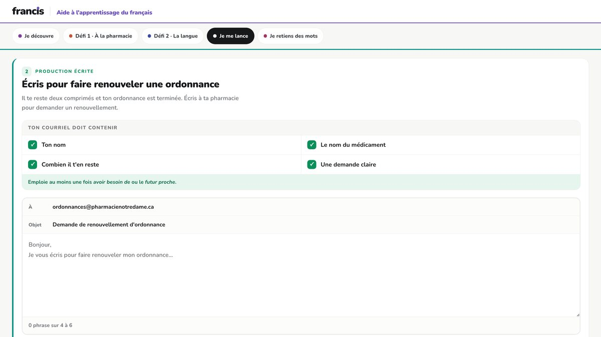
100:26 – 0:32
La correction qui s'efface
La production écrite : la liste de ce que le courriel doit contenir, puis le cadre du message adressé à la pharmacie. Par-dessus, une bulle de rétroaction se dissout en petits carrés.
Voix off« Elle n'est gardée nulle part. »
SonUn souffle court, puis rien.
Capture réelle, mais la bulle qui s'efface est un calque ajouté à l'animation : ce n'est pas un élément de l'interface. À l'écran, en petit : « aucune trace conservée ».
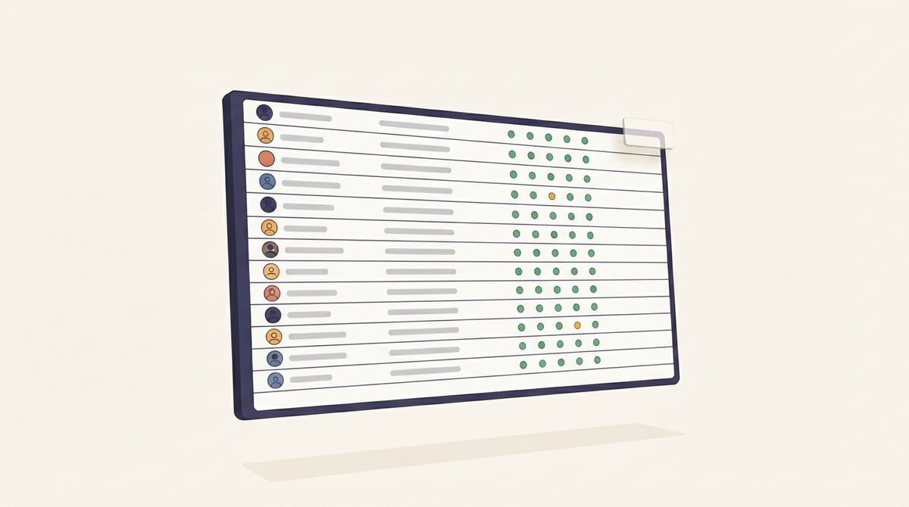
110:32 – 0:38
Le tableau du groupe
Un tableau de bord se dessine ligne par ligne : quinze rangées, des pastilles vertes, deux ambrées. Les noms sont des barres grises.
Voix off« Et l'enseignante, elle, voit enfin où chacun est rendu. »
SonLa nappe monte.
ENCORE UNE ESQUISSE. La vraie page — progression.html — est derrière la connexion enseignante ; il faut une session ouverte pour la photographier.
Signature
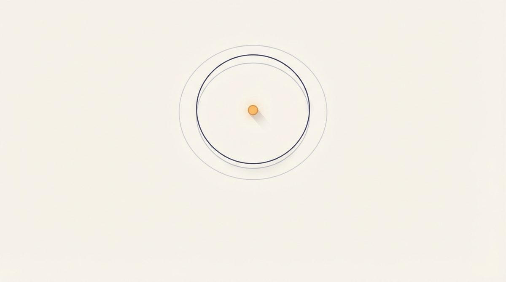
120:42 – 0:48
La signature
Cadre crème presque vide. La sphère s'est contractée en un seul point chaud, deux anneaux se referment sur lui. Sous le point : francis.
Voix off—
SonCoupure sèche, puis une note tenue qui s'éteint.
Le film commence et finit sur le même point. C'est toute la marque.
Ce qui tient le film ensemble
- Un seul motif traverse le film : le point du « i ». Micro qui écoute au plan 01, sphère qui se contracte au plan 12. C'est lui qui porte la marque, pas un logotype ajouté à la fin.
- Aucun texte lisible à l'écran avant la signature. Les mots sont des blocs de lettres abstraits : le teaser doit se lire dans n'importe quelle langue, et son public ne lit pas encore le français.
- Aucun visage, aucun vrai nom. Les silhouettes sont de dos et sans traits, les noms du tableau sont des barres grises. La règle du portail vaut aussi pour le film.
- Pas de vert dominant. Chaque module montré prend la couleur de son niveau — les huit bandes du plan 06 sont les huit niveaux du programme.
- Le bloc 3 peut se tourner en captures réelles du portail plutôt qu'en dessin : plus crédible, et bien moins coûteux qu'une animation 3D.
Deux choix réglés, deux points ouverts
Réglé — dessin ou capture ? Captures d'écran pour les plans 07 à 11. Le film montre le produit tel qu'il est aujourd'hui, et ne vieillira qu'avec lui.
Réglé — pour qui ? Les directions. C'est le montage ci-dessus : le bloc 1 pose le problème au complet, parce qu'une direction ne le vit pas tous les jours.
Ce qui reste ouvert
Voix off ou cartons ? Le texte est écrit pour une voix québécoise au débit lent — le sujet même du produit. Une version muette à cartons voyage mieux là où le son est coupé. Les deux sont possibles sur le même montage ; la voix off coûte une séance d'enregistrement de plus.
Le plan 11 attend une capture. progression.html est
derrière la connexion enseignante : il faut ouvrir une session dans le portail pour
le photographier. D'ici là, le plan garde son esquisse.